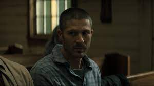
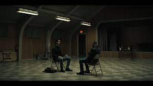
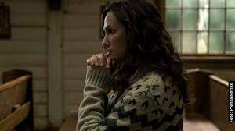
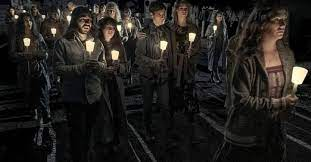

La llegada de un joven sacerdote carismático
trae milagros, misterios y un renovado fervor religioso
a una ciudad agonizante desesperada por la fe.
La llegada de un joven sacerdote carismático
trae milagros, misterios y un renovado fervor religioso
a una ciudad agonizante desesperada por la fe.
|  | LIBRO I: GÉNESIS |
Riley Flynn regresa y encuentra una familia disfuncional, rostros conocidos y un nuevo sacerdote en la Iglesia. En otra parte de la isla se avecina una feroz tormenta |
|  | LIBRO II: SALMOS |
Un presagio inquietante llega a la costa tras una tormenta. Después cuando,los locales se reúnen a comer ocurre una tragedia...y un milagro. |
|  | LIBRO III: PROVERBIOS |
Los residentes quedan atónitos frente a algunos milagros mientras Leeza visita a Joe. Una impactante confesión revela lo que realmente le sucedióa monseñor Pruitt. |
 |
LIBRO IV:LAMENTACIONES |
Erin recurre a Riley tras recibir noticias perturbadoras. El Padre Paul comienza a experimentar efectos secundarios preocupantes. Bev hace un descubrimiento impactante. |
 |
LIBRO V:SANTO EVANGELIO |
El sheriff Hassam recoge varios informes de personas desaparecidas mientras el pueble se prepara para el Viernes Santo. Para proteger a Erin, Riley releva la verdad. |
|  | LIBRO VI: HECHOS DE LOS APÓSTOLES |
Una Bev ferviente hace un llamado de fé en la vigilia de Pascua. Sarah revela los efectos de un experimento inquietante... y una hipótesis aleccionadora. |
 |
LIBRO VII: APOCALIPSIS |
Cae la noche en la isla mientras un grupo de rebeldes se refugia donde puede y urde un plan para controlar el caos. |